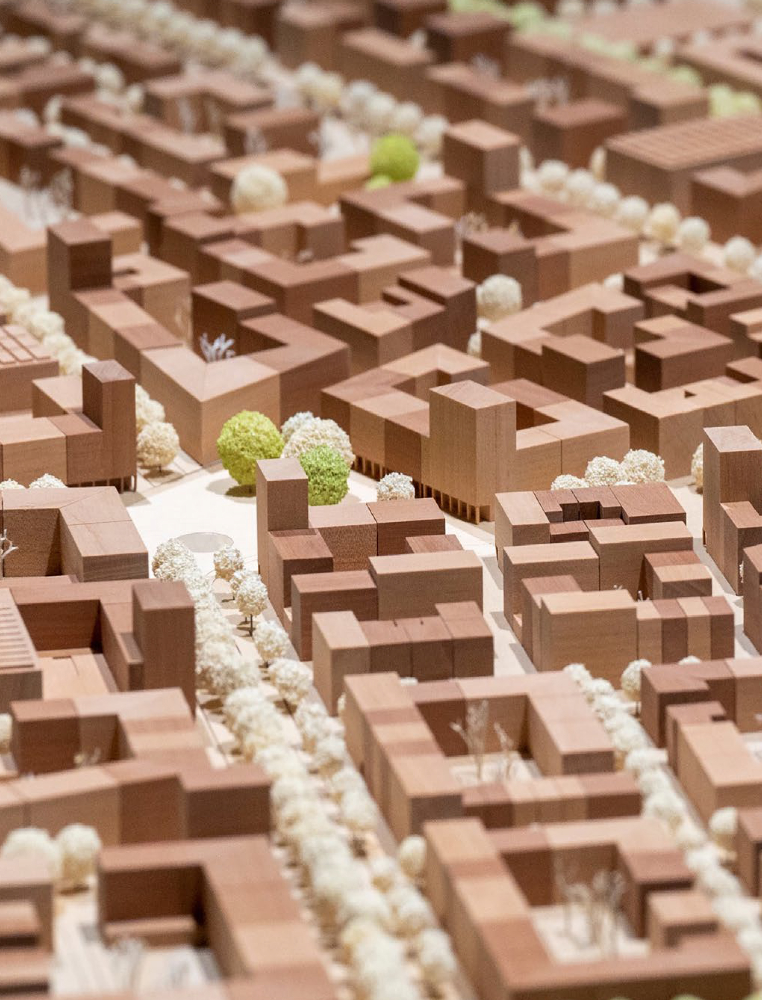

Unsere Vision

Baugruppe Grünwerk basiert auf zwei zentralen Säulen: die nachhaltige, umweltfreundliche Bauweise im Sinne von Dietenbachs Klimaschutz-Zielen und die Stärke der Handwerker-getragenen Gemeinschaft.
Als Handwerker*innen wissen wir, worauf es bei qualitativ hochwertigem Bauen ankommt – und wir nutzen diese Erfahrung, um den 1. Bauabschnitt von Dietenbach mit effizienten, ressourcenschonenden und energieoptimierten Gebäuden zu gestalten. Wir bauen nachhaltig und energieeffizient, setzen auf nachwachsende Rohstoffe wie Holz, integrieren erneuerbare Energien und folgen den strengen Passivhaus-Standards Freiburgs. Unser Ansatz vermeidet überflüssige Zwischenschritte, sodass wir Bauqualität sichern und gleichzeitig Kosten effizient gestalten – ein Vorteil, der sich auf das gesamte Quartier auswirkt.
Unsere Vision geht aber über das Bauen hinaus: Wir schaffen einen sozialen Ort, der Inklusion, Nachbarschaft und gemeinsames Gestalten fördert. Dietenbachs Idee eines naturnah, klimaschonend und autofreien Quartiers leben wir nicht nur nach – wir erweitern sie um einen Ort für gemeinsames Arbeiten, Kreativität und Austausch. Als Baugruppe sind wir die Bewohner*innen selbst: Wir gestalten unseren Wohnraum aktiv mit, nehmen Verantwortung und schaffen eine nachhaltige Gemeinschaft, die über den Bau hinaus besteht.
Wir bleiben stets am Puls der Zeit: Neue Technologien im nachhaltigen Bauen, innovative Energiekonzepte und die Bedürfnisse der Gesellschaft integrieren wir in unseren Planungen – um ein Pilotprojekt für modernes, gemeinschaftliches Wohnen in Freiburg zu schaffen.